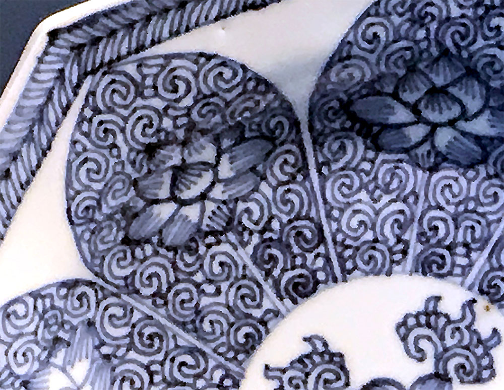
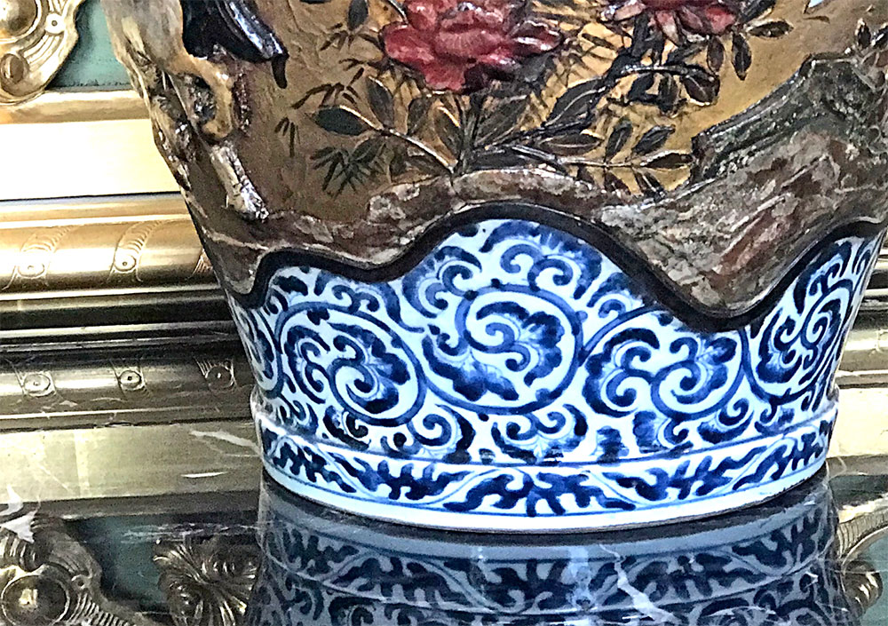
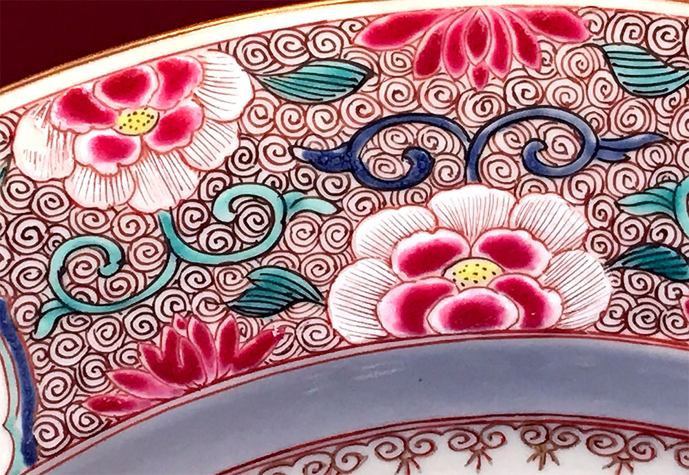
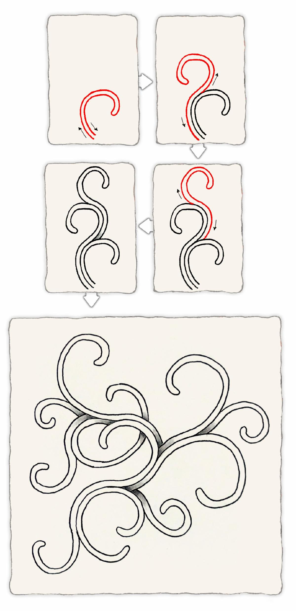
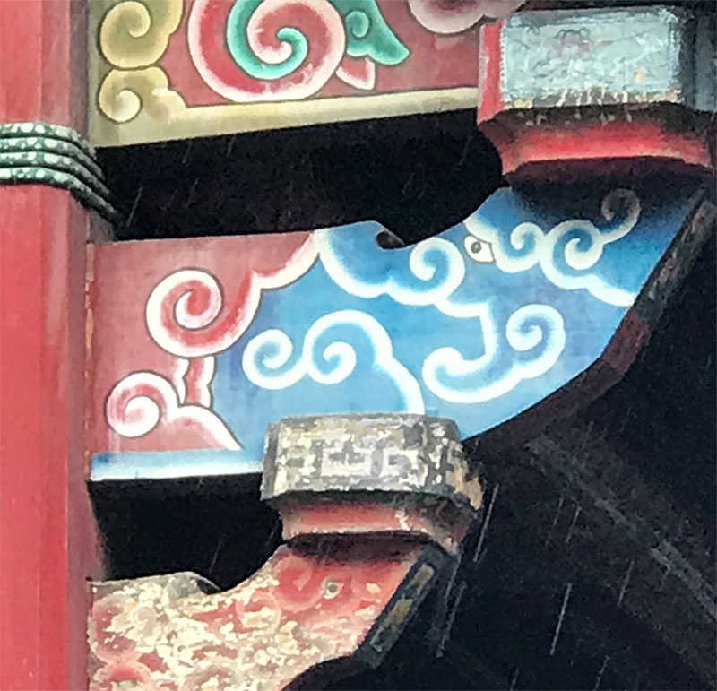
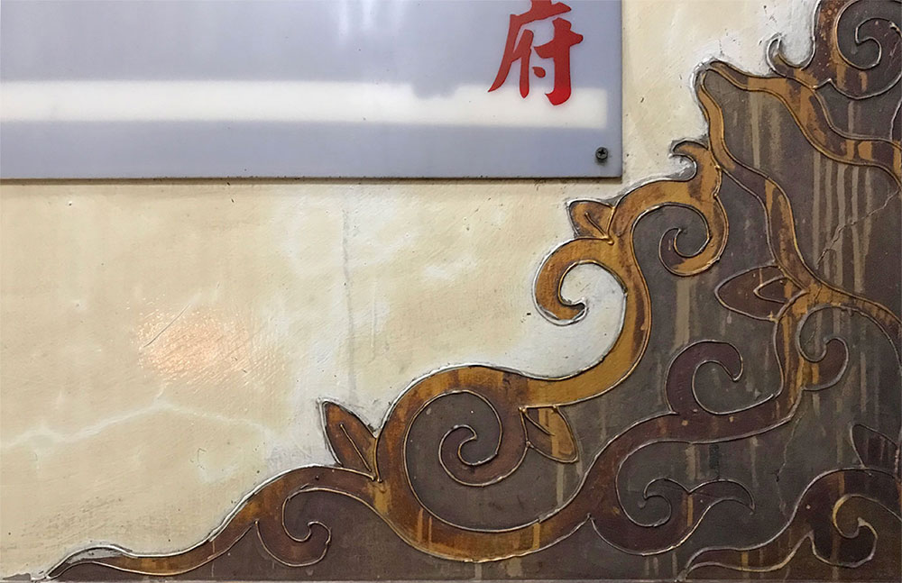
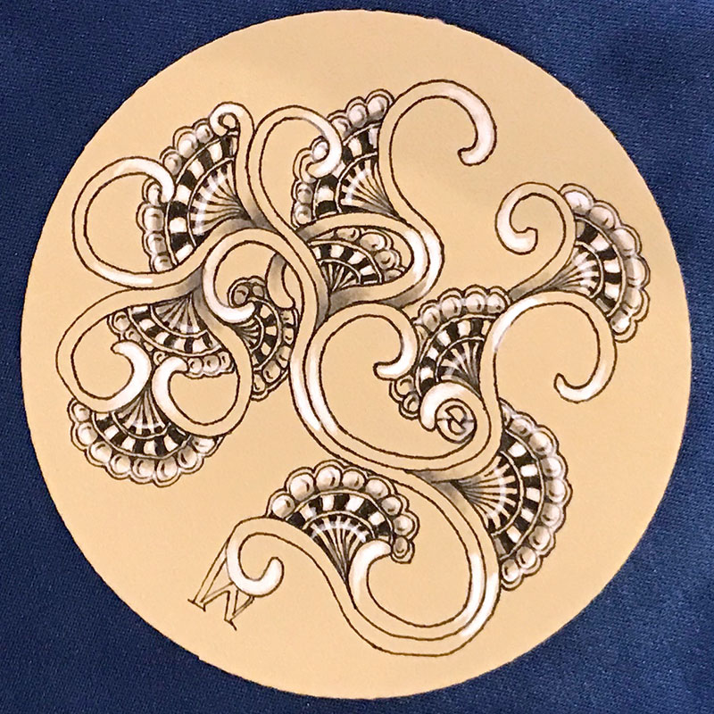
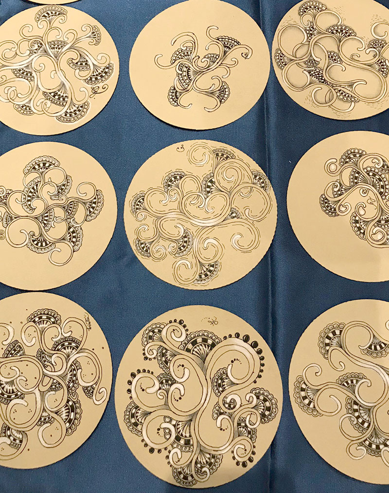
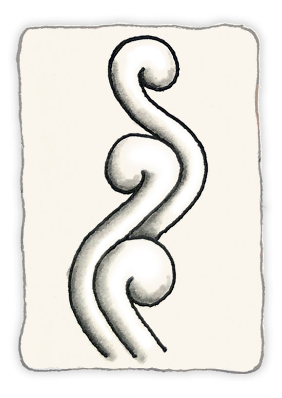

October 3, 2019
Hello CZT,
Rick提到
我跟Maria先前在德國─法蘭克福參加歐洲首次舉辦的CZT seminar。活動結束後，我們去了慕尼黑。慕尼黑是座充滿博物館、教堂以及美麗建築的城市。我們花了許多時間流連在這些寶貴的建築物之中，試著從中發現新圖樣。
在一座博物館中，我們發現一個了中華文化的陶器。我們仔細留意上面的蛛絲馬跡，因為不久後我們即將在台北有一場CZT的大型聚會(這封newsletter就是在參加zenAgain-Asia時所撰寫)。這不就是一個絕妙的機會在台灣介紹一個源自亞洲的新圖樣？

這件陶器的一隅深深地吸引我，因為在上面看到了迷人的筆劃。這件陶器作品出自於清朝─康熙年間(1662-1722)；也許我可以從這些筆劃中，理出它的解構方法。
|
我嘗試了好幾種方法，但沒有任何一個是貼近禪繞的結構方式。我想，應該是我太專注在複製這個圖案上。
於是我尋找它的基本結構，看看是否能「發現」新圖樣，即便這個新圖樣並沒有很精確的複製原本的圖案。回去後，我從頭研究在博物館裡有用這種圖案創作的其他作品照片。
|

|
|

從下面的步驟分解圖中你會發現，我們使用了「光環(aura)」技巧圍繞整個圖樣。這基本的形狀就是線條本身的延伸弧線，而當你使用「從後面畫(draw behind)」時，你會發現立體公路(hollibaugh)穿梭其中。

我們準備在zenAgain-Asia中介紹這個圖樣前，我們在台北的下塌飯店周圍，時常可以看見類似的圖案。以下照片就是在附近的兩座廟宇中所拍攝。
 
這個圖樣同時也提供了能與其他圖樣搭配創作的架構。在昨晚的課程中*，我們第一次公開了Hollis的基本結構，當Maria在創作時，靈感乍現地隨手加了幾片像是月亮形狀的派，並當場為派想了一個名字，叫做「moon pie」。
(*昨晚的課程：指zenAgain-Asia活動課程)
你可以發現，在hollis的分岔處加上moon pie能激發出許多創意，就像上面的右圖。


相信各位在這個圖樣上，會有許多不同方向的發揮，而我為自己設定了「優雅的限制」，我會讓第二個hollis緊連著第一個hollis的曲線(起飛的技巧)，接著再改變每一次延展出去的方向。
你也可以嘗試改變結束的形狀以及光環的寬度，例如：

如同所有的圖樣，我們都期待看到大家的各種創作，無論是單獨創作hollis，或是以hollis作為種子而發展出其他各種可能。
對了，為什麼我們要叫它Hollis呢？因為Hollis Littlecreek是一位教導我許多事情的人，包括如何製造以及演奏美國印地安笛。(謝謝你，Hollis！)
Enjoy!
PS. 留意你的信箱收件匣，明天還會有更令人興奮的訊息！
|
|